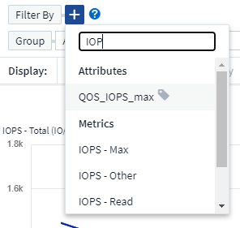
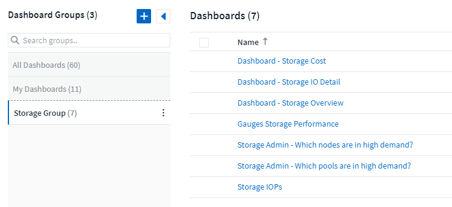

문서 변경 요청
문서 변경 요청 이 페이지 편집
이 페이지 편집 기여하는 방법 자세히 알아보기
기여하는 방법 자세히 알아보기대시보드 기능
대시보드와 위젯은 데이터가 표시되는 방식을 매우 유연하게 지원합니다. 다음은 사용자 지정 대시보드를 최대한 활용하는 데 도움이 되는 몇 가지 개념입니다.
위젯 이름 지정
위젯은 첫 번째 위젯 쿼리에 대해 선택한 오브젝트, 메트릭 또는 속성을 기반으로 자동으로 이름이 지정됩니다. 위젯에 대한 그룹화를 선택한 경우 "그룹화 기준" 특성이 자동 명명(집계 방법 및 메트릭)에 포함됩니다.

새 개체 또는 그룹화 특성을 선택하면 자동 이름이 업데이트됩니다.
자동 위젯 이름을 사용하지 않으려면 새 이름을 입력하기만 하면 됩니다.
위젯 배치 및 크기
모든 대시보드 위젯은 특정 대시보드의 필요에 따라 배치 및 사이징할 수 있습니다.
위젯 복제
대시보드 편집 모드에서 위젯의 메뉴를 클릭하고 * 복제 * 를 선택합니다. 위젯 편집기가 시작되고, 원래 위젯의 구성이 미리 채워지고 위젯 이름에 "copy" 접미사가 붙습니다. 필요한 사항을 쉽게 변경하고 새 위젯을 저장할 수 있습니다. 위젯은 대시보드 하단에 배치되며 필요에 따라 배치할 수 있습니다. 모든 변경이 완료되면 대시보드를 저장해야 합니다.

위젯 범례 표시 중
대시보드의 대부분의 위젯은 범례와 함께 또는 범례 없이 표시할 수 있습니다. 다음 방법 중 하나를 사용하여 위젯의 범례를 대시보드에서 설정하거나 해제할 수 있습니다.
-
대시보드를 표시할 때 위젯에서 * 옵션 * 버튼을 클릭하고 메뉴에서 * 범례 표시 * 를 선택합니다.
위젯에 표시된 데이터가 변경되면 해당 위젯에 대한 범례가 동적으로 업데이트됩니다.
범례가 표시될 때 범례가 나타내는 자산의 랜딩 페이지를 탐색할 수 있으면 범례가 해당 자산 페이지에 대한 링크로 표시됩니다. 범례에 "모두"가 표시되면 링크를 클릭하면 위젯의 첫 번째 쿼리에 해당하는 쿼리 페이지가 표시됩니다.
메트릭 혁신
Cloud Insights는 위젯에서 특정 메트릭의 다양한 * 변환 * 옵션을 제공합니다(특히, Kubernetes, ONTAP 고급 데이터, Teleraf 플러그인 등과 같은 "사용자 지정" 또는 통합 메트릭이라고 함). 이를 통해 다양한 방식으로 데이터를 표시할 수 있습니다. 변환될 수 있는 메트릭을 위젯에 추가하면 다음과 같은 변환 선택 사항을 제공하는 드롭다운이 표시됩니다.
- 없음
-
데이터는 조작 없이 그대로 표시됩니다.
- 속도
-
현재 값을 이전 관찰 이후의 시간 범위로 나눈 값입니다.
- 누적
-
이전 값과 현재 값의 합계를 누적하는 값입니다.
- 델타
-
이전 관찰 값과 현재 값의 차이
- 델타 요금
-
델타 값을 이전 관찰 이후의 시간 범위로 나눈 값
- 누적 속도
-
누적 값을 이전 관찰 이후의 시간 범위로 나눈 값입니다.
메트릭을 변환해도 기본 데이터 자체는 변경되지 않고 데이터가 표시되는 방식만 변경됩니다.
대시보드 위젯 쿼리 및 필터
쿼리
대시보드 위젯의 쿼리는 데이터 표시를 관리하는 강력한 도구입니다. 다음은 위젯 쿼리에 대해 주의해야 할 몇 가지 사항입니다.
일부 위젯에는 최대 5개의 쿼리가 있을 수 있습니다. 각 쿼리는 위젯에 고유한 선 또는 그래프 세트를 플롯합니다. 한 쿼리에 롤업, 그룹화, 상위/하위 결과 등을 설정해도 위젯에 대한 다른 쿼리에는 영향을 주지 않습니다.
아이 아이콘을 클릭하여 쿼리를 일시적으로 숨길 수 있습니다. 쿼리를 숨기거나 표시하면 위젯이 자동으로 업데이트됩니다. 이렇게 하면 위젯을 구축할 때 개별 쿼리에 대해 표시된 데이터를 확인할 수 있습니다.
다음 위젯 유형에는 여러 개의 쿼리가 있을 수 있습니다.
-
영역형 차트
-
누적 영역형 차트
-
꺾은선형 차트
-
스플라인 차트
-
단일 값 위젯
나머지 위젯 유형에는 하나의 쿼리만 있을 수 있습니다.
-
표
-
가로 막대형 차트
-
상자 플롯
-
산포도
대시보드 위젯 쿼리에서 필터링
다음은 필터를 최대한 활용하기 위해 할 수 있는 몇 가지 사항입니다.
정확한 일치 필터링
필터 문자열을 큰따옴표로 묶으면 Insight는 첫 번째 견적과 마지막 견적 사이의 모든 항목을 정확히 일치하는 것으로 간주합니다. 따옴표 안에 있는 모든 특수 문자나 연산자는 리터럴로 처리됩니다. 예를 들어 "*"를 필터링하면 리터럴 별표로 된 결과가 반환되고, 이 경우 별표는 와일드카드로 처리되지 않습니다. 연산자 및, 또는 및 는 큰따옴표로 묶으면 리터럴 문자열로 처리됩니다.
정확히 일치하는 필터를 사용하여 호스트 이름과 같은 특정 리소스를 찾을 수 있습니다. 호스트 이름 '마케팅’만 찾되 '마케팅-보스턴', '마케팅-보스턴' 등은 제외하려면 "마케팅"이라는 이름을 큰따옴표로 묶기만 하면 됩니다.
와일드카드와 식
쿼리 또는 대시보드 위젯에서 텍스트 또는 목록 값을 필터링할 때 입력을 시작하면 현재 텍스트를 기반으로 * 와일드카드 필터 * 를 만드는 옵션이 표시됩니다. 이 옵션을 선택하면 와일드카드 식과 일치하는 모든 결과가 반환됩니다. NOT 또는 OR을 사용하여 * 식 * 을 만들거나 "없음" 옵션을 선택하여 필드의 null 값을 필터링할 수도 있습니다.

와일드카드 또는 식(예 NOT, 또는, "없음" 등)이 필터 필드에 진한 파란색으로 표시됩니다. 목록에서 직접 선택한 항목은 연한 파란색으로 표시됩니다.

와일드카드 및 식 필터링은 텍스트 또는 목록과 함께 사용할 수 있지만 수치, 날짜 또는 부울은 사용할 수 없습니다.
미리 입력 제안 기능이 있는 고급 텍스트 필터링
필드의 값 또는 값을 선택하면 해당 쿼리의 다른 필터에 해당 필터와 관련된 값이 표시됩니다. 예를 들어, 특정 object_Name_에 대한 필터를 설정할 때 _Model_에 대해 필터링할 필드는 해당 개체 이름과 관련된 값만 표시합니다.
텍스트 필터만 상황에 맞는 미리 보기 형식 제안을 표시합니다. 날짜, Enum(목록) 등은 미리 제안된 형식을 표시하지 않습니다. 즉, Enum(즉 목록) 필드에 필터를 설정할 수 있고 다른 텍스트 필드를 컨텍스트로 필터링할 수 있습니다. 예를 들어, 데이터 센터와 같은 Enum 필드에서 값을 선택하면 다른 필터는 해당 데이터 센터의 모델/이름만 표시하지만 그 반대는 표시하지 않습니다.
선택한 시간 범위는 필터에 표시된 데이터에 대한 컨텍스트도 제공합니다.
필터 장치 선택
필터 필드에 값을 입력할 때 차트에 값을 표시할 단위를 선택할 수 있습니다. 예를 들어, 원시 용량을 기준으로 필터링하여 기본 용량 GiB로 표시하거나, TiB와 같은 다른 형식을 선택할 수 있습니다. 대시보드에 값이 TiB로 표시된 차트가 여러 개이고 모든 차트에 일관된 값이 표시되도록 하려는 경우에 유용합니다.

추가 필터링 개선
다음은 필터를 더욱 구체화하는 데 사용할 수 있습니다.
-
별표를 사용하면 모든 항목을 검색할 수 있습니다. 예를 들면, 다음과 같습니다.
vol*rhel
"vol"로 시작하고 "rhel"로 끝나는 모든 리소스를 표시합니다.
-
물음표를 사용하면 특정 수의 문자를 검색할 수 있습니다. 예를 들면, 다음과 같습니다.
BOS-PRD??-S12
BOS-PRD12-S12_,BOS-PRD13-S12 등을 표시합니다.
-
또는 연산자를 사용하여 여러 요소를 지정할 수 있습니다. 예를 들면, 다음과 같습니다.
FAS2240 OR CX600 OR FAS3270
여러 스토리지 모델을 찾습니다.
-
NOT 연산자를 사용하면 검색 결과에서 텍스트를 제외할 수 있습니다. 예를 들면, 다음과 같습니다.
NOT EMC*
"EMC"로 시작하지 않는 모든 항목을 찾습니다. 을 사용할 수 있습니다
NOT *
값이 없는 필드를 표시합니다.
쿼리 및 필터에 의해 반환된 개체를 식별합니다
쿼리 및 필터에 의해 반환된 개체는 다음 그림에 표시된 개체와 비슷합니다. '태그’가 할당된 개체는 주석이고, 태그가 없는 개체는 성능 카운터 또는 개체 특성입니다.

그룹화 및 집계
그룹화(압연)
위젯에 표시되는 데이터는 획득 중에 수집된 기본 데이터 포인트로부터 그룹화됩니다(롤업이라고도 함). 예를 들어, 시간에 따른 스토리지 IOPS를 보여 주는 선형 차트 위젯이 있는 경우 각 데이터 센터에 대해 별도의 줄을 표시하여 빠르게 비교할 수 있습니다. 다음 방법 중 하나로 이 데이터를 그룹화할 수 있습니다.
-
* Avg *: 각 행을 기본 데이터의 _average_로 표시합니다.
-
* Max *: 각 행을 내부 데이터의 _maximum_으로 표시합니다.
-
* Min *: 각 행을 내부 데이터의 _minimum_으로 표시합니다.
-
* Sum *: 각 행을 원본 데이터의 _sum_으로 표시합니다.
-
* Count *: 지정된 기간 내에 데이터를 보고한 개체의 _ count_을 표시합니다. 대시보드 시간 범위(또는 대시보드 시간을 재정의하도록 설정된 경우 위젯 시간 범위)에 의해 결정되는 전체 시간 창 또는 선택한 _사용자 정의 시간 창_을 선택할 수 있습니다.
그룹화 방법을 설정하려면 다음을 실행합니다.
-
위젯의 쿼리에서 자산 유형 및 메트릭(예: Storage) 및 메트릭(예: Performance IOPS Total)을 선택합니다.
-
Group * 의 경우 롤업 방법(예: Avg)을 선택하고 데이터를 롤업할 특성 또는 메트릭을 선택합니다(예: Data Center).
위젯이 자동으로 업데이트되고 각 데이터 센터의 데이터가 표시됩니다.
또한 원본으로 사용하는 데이터의 _ALL_을 차트 또는 테이블로 그룹화할 수도 있습니다. 이 경우 위젯의 각 쿼리에 대해 하나의 줄이 표시됩니다. 이 라인은 모든 기본 자산에 대해 선택한 메트릭 또는 메트릭의 평균, 최소, 최대, 합계 또는 개수를 표시합니다.
데이터가 "모두"로 그룹화된 위젯에 대한 범례를 클릭하면 위젯에 사용된 첫 번째 쿼리의 결과를 보여주는 쿼리 페이지가 열립니다.
쿼리에 대한 필터를 설정한 경우 데이터는 필터링된 데이터를 기준으로 그룹화됩니다.
모든 필드(예: Model)별로 위젯을 그룹화하도록 선택한 경우에도 차트 또는 테이블에 해당 필드의 데이터를 올바르게 표시하려면 해당 필드를 기준으로 필터링해야 합니다.
데이터 집계
데이터 포인트를 분, 시간 또는 일 단위로 집계하여 속성(선택한 경우)에 의해 데이터가 롤업되기 전에 시계열 차트(선, 영역 등)를 추가로 정렬할 수 있습니다. 선택한 간격 동안 수집한 Avg, Max, Min 또는 Sum 또는 _last_데이터 포인트에 따라 데이터 포인트를 집계하도록 선택할 수 있습니다. 집계 방법을 선택하려면 위젯의 쿼리 섹션에서 * 추가 옵션 * 을 클릭합니다.
긴 시간 범위와 함께 작은 간격이 있을 경우 "집계 간격 때문에 데이터 요소가 너무 많습니다." 경고가 나타날 수 있습니다. 간격이 작고 대시보드 기간을 7일로 늘릴 경우 이 내용이 표시될 수 있습니다. 이 경우 Insight는 더 작은 기간을 선택할 때까지 집계 간격을 일시적으로 늘립니다.
막대 차트 위젯과 단일 값 위젯에서 데이터를 집계할 수도 있습니다.
대부분의 자산 카운터는 기본적으로 Avg_로 집계됩니다. 일부 카운터는 기본적으로 _Max, Min 또는 _Sum_으로 집계됩니다. 예를 들어 포트 오류는 기본적으로 _Sum_으로 집계되며, 여기서 스토리지 IOPS는 _Avg_로 집계됩니다.
위/아래 결과 표시
차트 위젯에서 롤업 데이터에 대한 * 상위 * 또는 * 하위 * 결과를 표시하고 제공된 드롭다운 목록에서 결과 수를 선택할 수 있습니다. 표 위젯에서 모든 열을 기준으로 정렬할 수 있습니다.
차트 위젯 위/아래
차트 위젯에서 특정 속성으로 데이터를 롤업하도록 선택하면 상위 N 또는 하위 N 결과를 볼 수 있습니다. ALL_ATTURES로 롤업을 선택하면 위 또는 아래 결과를 선택할 수 없습니다.
쿼리의 * 표시 * 필드에서 * 상위 * 또는 * 하위 * 를 선택하고 제공된 목록에서 값을 선택하여 표시할 결과를 선택할 수 있습니다.
테이블 위젯에 항목이 표시됩니다
표 위젯에서 표 결과에 표시되는 결과 수를 선택할 수 있습니다. 필요 시 열을 기준으로 오름차순 또는 내림차순으로 정렬할 수 있으므로 위 또는 아래 결과를 선택할 수 있는 옵션이 제공되지 않습니다.
쿼리의 * 항목 표시 * 필드에서 값을 선택하여 대시보드의 테이블에 표시할 결과 수를 선택할 수 있습니다.
테이블 위젯에서 그룹화
테이블 위젯의 데이터는 사용 가능한 속성별로 그룹화되어 데이터의 개요를 볼 수 있고 더 자세한 정보를 위해 드릴다운할 수 있습니다. 테이블의 메트릭은 축소된 각 행에서 쉽게 볼 수 있도록 롤업됩니다.
표 위젯을 사용하면 설정한 특성에 따라 데이터를 그룹화할 수 있습니다. 예를 들어, 해당 스토리지가 있는 데이터 센터별로 그룹화된 총 스토리지 IOPS를 표에 표시할 수 있습니다. 또는 가상 머신을 호스팅하는 하이퍼바이저에 따라 그룹화된 가상 머신 테이블을 표시할 수도 있습니다. 목록에서 각 그룹을 확장하여 해당 그룹의 자산을 볼 수 있습니다.
그룹화는 테이블 위젯 유형에서만 사용할 수 있습니다.
그룹화 예제(롤업 설명 포함)
표 위젯을 사용하면 데이터를 그룹화하여 보다 쉽게 표시할 수 있습니다.
이 예에서는 데이터 센터별로 그룹화된 모든 VM을 보여 주는 테이블 위젯을 생성합니다.
-
대시보드를 만들거나 열고 * Table * 위젯을 추가합니다.
-
이 위젯의 자산 유형으로 _ Virtual Machine _ 을(를) 선택합니다.
-
열 선택기를 클릭하고 _하이퍼바이저 이름_과 _IOPS - 합계_를 선택합니다.
이제 이러한 열이 표에 표시됩니다.
-
IOPS가 없는 VM은 무시하고 총 IOPS가 1보다 큰 VM만 포함해보겠습니다. Filter by * * * [+] * 버튼을 클릭하고 _IOPS - Total_을 선택합니다. any_를 클릭하고 * From * 필드에 * 1 * 을 입력합니다. 받는 사람 * 필드는 비워 둡니다. Enter 키를 누르고 필터 필드를 클릭하여 필터를 적용합니다.
이제 표에는 총 IOPS가 1보다 크거나 같은 모든 VM이 표시됩니다. 테이블에 그룹이 없습니다. 모든 VM이 표시됩니다.
-
Group By [+] * 버튼을 클릭합니다.
표시된 속성 또는 주석별로 그룹화할 수 있습니다. 모든 VM을 단일 그룹에 표시하려면 _ALL_을 선택합니다.
성능 메트릭에 대한 열 머리글은 * 롤업 * 옵션이 포함된 "세 점" 메뉴를 표시합니다. 기본 롤업 방법은 _ Avg _ 입니다. 즉, 그룹에 표시된 숫자는 그룹 내의 각 VM에 대해 보고된 총 IOPS의 평균입니다. 이 열을 _Avg, Sum, Min_or_Max_로 롤업하도록 선택할 수 있습니다. 성능 메트릭이 포함된 모든 열을 개별적으로 롤업할 수 있습니다.

-
ALL_을 클릭하고 _하이퍼바이저 이름_을 선택합니다.
이제 VM 목록이 하이퍼바이저별로 그룹화됩니다. 각 하이퍼바이저를 확장하여 해당 하이퍼바이저에서 호스팅되는 VM을 볼 수 있습니다.
-
저장 * 을 클릭하여 테이블을 대시보드에 저장합니다. 원하는 대로 위젯의 크기를 조정하거나 이동할 수 있습니다.
-
대시보드를 저장하려면 * 저장 * 을 클릭합니다.
성능 데이터 롤업
테이블 위젯에 성능 데이터 열(예: IOPS - Total)을 포함하는 경우 데이터를 그룹화하도록 선택하면 해당 열에 대해 롤업 방법을 선택할 수 있습니다. 기본 롤업 방법은 그룹 행에 있는 기본 데이터의 평균(avg)을 표시하는 것입니다. 데이터의 합계, 최소 또는 최대값을 표시하도록 선택할 수도 있습니다.
대시보드 시간 범위 선택기
대시보드 데이터의 시간 범위를 선택할 수 있습니다. 선택한 시간 범위와 관련된 데이터만 대시보드의 위젯에 표시됩니다. 다음 시간 범위 중에서 선택할 수 있습니다.
-
최근 15분
-
마지막 30분
-
마지막 60분
-
최근 2시간
-
최근 3시간(기본값)
-
최근 6시간
-
최근 12시간
-
최근 24시간
-
최근 2일
-
지난 3일
-
최근 7일
-
지난 30일
-
사용자 지정 시간 범위
사용자 지정 시간 범위를 사용하면 최대 31일 연속 선택할 수 있습니다. 이 범위에 대한 시작 시간 및 종료 시간을 설정할 수도 있습니다. 기본 시작 시간은 선택한 첫 번째 날짜의 오전 12:00이고 기본 종료 시간은 선택한 마지막 날짜의 오후 11:59입니다. 적용 * 을 클릭하면 사용자 지정 시간 범위가 대시보드에 적용됩니다.
개별 위젯에서 대시보드 시간 재정의
개별 위젯에서 기본 대시보드 시간 범위 설정을 재정의할 수 있습니다. 이러한 위젯은 대시보드 타임프레임이 아닌 설정된 기간을 기준으로 데이터를 표시합니다.
대시보드 시간을 무시하고 위젯이 자체 시간 프레임을 사용하도록 하려면 위젯의 편집 모드에서 * 대시보드 시간 재정의 * 를 * 켜짐 * (확인란 선택)으로 설정하고 위젯의 시간 범위를 선택합니다. * 위젯을 대시보드에 * 저장 * 합니다.
위젯은 대시보드 자체에서 선택한 기간에 관계없이 위젯에 설정된 시간 프레임에 따라 데이터를 표시합니다.
한 위젯에 대해 설정한 기간은 대시보드의 다른 위젯에 영향을 주지 않습니다.
기본 및 보조 축
메트릭마다 차트에서 보고하는 데이터에 대해 서로 다른 측정 단위를 사용합니다. 예를 들어, IOPS를 볼 때 측정 단위는 초당 I/O 작업 수(IO/s)이고 지연 시간은 순전히 시간 단위(밀리초, 마이크로초, 초 등)입니다. 단일 집합에 Y축 값을 사용하여 두 메트릭을 모두 차트에 작성할 경우 지연 시간 번호(일반적으로 몇 밀리초)는 IOPS(일반적으로 수천 단위로 번호 지정)를 사용하여 동일한 배율로 차트로 작성되고 지연 시간 선은 해당 배율로 손실됩니다.
그러나 기본(왼쪽) Y축에 하나의 측정 단위를 설정하고 보조(오른쪽) Y축에 다른 측정 단위를 설정하여 하나의 의미 있는 그래프에 두 데이터 집합을 모두 표시할 수 있습니다. 각 메트릭은 자체 척도에 따라 차트로 작성됩니다.
이 예제에서는 차트 위젯의 기본 및 보조 축 개념을 보여 줍니다.
-
대시보드를 만들거나 엽니다. 꺾은선형 차트, 스플라인 차트, 영역형 차트 또는 누적 영역형 차트 위젯을 대시보드에 추가합니다.
-
자산 유형(예: Storage)을 선택하고 첫 번째 메트릭으로 _IOPS-Total_을 선택합니다. 원하는 필터를 설정하고 원하는 경우 롤업 방법을 선택합니다.
IOPS 선이 차트에 표시되고, 눈금은 왼쪽에 표시됩니다.
-
차트에 두 번째 줄을 추가하려면 * [+Query] * 를 클릭합니다. 이 라인의 경우 메트릭에 대해 _Latency-Total_을 선택합니다.
차트 아래쪽에 선이 평평하게 표시됩니다. IOPS 라인과 동일한 스케일로 _ 이(가) 그려지기 때문입니다.
-
지연 시간 쿼리에서 * Y축: 보조 * 를 선택합니다.
이제 지연 시간 선이 차트 오른쪽에 표시되는 자체 배율로 그려집니다.

위젯의 식
대시보드에서 시간 시리즈 위젯(선, 스플라인, 영역, 누적 영역), 단일 값, 또는 Gauge Widget 을 사용하면 선택한 메트릭에서 식을 작성하고 이러한 식의 결과를 단일 그래프에 표시할 수 있습니다. 다음 예제에서는 식을 사용하여 특정 문제를 해결합니다. 첫 번째 예에서는 환경의 모든 스토리지 자산에 대해 총 IOPS의 백분율로 읽기 IOPS를 표시하려고 합니다. 두 번째 예에서는 사용자 환경에서 발생하는 "시스템" 또는 "오버헤드" IOPS, 즉 데이터를 읽거나 쓰는 데 직접 영향을 받지 않는 IOPS에 대한 가시성을 제공합니다.
식에 변수를 사용할 수 있습니다(예: $var1 * 100).
표현식 예: 읽기 IOPS 백분율
이 예에서는 총 IOPS의 백분율로 읽기 IOPS를 표시하려고 합니다. 이 수식을 다음과 같은 수식으로 생각할 수 있습니다.
Read Percentage = (Read IOPS / Total IOPS) x 100 이 데이터는 대시보드의 선 그래프에 표시할 수 있습니다. 이렇게 하려면 다음 단계를 수행하십시오.
-
새 대시보드를 만들거나 편집 모드에서 기존 대시보드를 엽니다.
-
대시보드에 위젯을 추가합니다. 영역표 * 를 선택합니다.
위젯이 편집 모드로 열립니다. 기본적으로 쿼리는 _IOPS - Total_for_Storage_assets를 보여 줍니다. 원하는 경우 다른 자산 유형을 선택합니다.
-
오른쪽에 있는 * Expression * 으로 변환 링크를 클릭합니다.
현재 쿼리가 식 모드로 변환됩니다. 표현식 모드에서는 자산 유형을 변경할 수 없습니다. Expression 모드에 있는 동안 링크는 * 쿼리 * 로 되돌리기 * 로 변경됩니다. 언제든지 쿼리 모드로 다시 전환하려면 이 옵션을 클릭합니다. 모드 간을 전환하면 필드가 기본값으로 재설정됩니다.
지금은 Expression 모드를 사용할 수 있습니다.
-
이제 * IOPS-Total * 메트릭은 알파벳 변수 필드 " * A * "에 있습니다. " * b * " 변수 필드에서 * 선택 * 을 클릭하고 * IOPS - 읽기 * 를 선택합니다.
변수 필드 다음에 있는 + 버튼을 클릭하여 식에 대해 최대 5개의 알파벳 변수를 추가할 수 있습니다. 읽기 백분율 예에서는 총 IOPS(" * a * ") 및 읽기 IOPS(" * b * ")만 필요합니다.
-
식 * 필드에서 각 변수에 해당하는 문자를 사용하여 식을 작성합니다. 읽기 백분율 = (읽기 IOPS/총 IOPS) x 100을 알고 있으므로 이 식을 다음과 같이 씁니다.
(b / a) * 100 . Label * 필드는 표현식을 식별합니다. 레이블을 "읽기 백분율"으로 변경하거나 의미 있는 레이블을 변경합니다. . 단위 * 필드를 "%" 또는 "%"로 변경합니다.
선택한 스토리지 디바이스에 대한 IOPS 읽기 백분율이 차트에 표시됩니다. 원하는 경우 필터를 설정하거나 다른 롤업 방법을 선택할 수 있습니다. 합계 를 롤업 방법으로 선택하면 모든 백분율 값이 함께 추가되며, 이 값은 100%보다 높아질 수 있습니다.
-
차트를 대시보드에 저장하려면 * 저장 * 을 클릭합니다.
선형 차트, 스플라인 차트 또는 누적 영역형 차트 위젯에서 식을 사용할 수도 있습니다.
식 예: "System" I/O
예 2: 데이터 소스에서 수집된 메트릭 중 읽기, 쓰기 및 총 IOPS가 있습니다. 그러나 데이터 소스에서 보고하는 총 IOPS 수에 "시스템" IOPS가 포함되는 경우가 있습니다. 이는 데이터 읽기 또는 쓰기의 직접적인 부분이 아닌 IO 작업입니다. 또한 이 시스템 I/O는 적절한 시스템 작동에 필요하지만 데이터 작업과 직접 관련이 없는 "오버헤드" I/O로 생각할 수 있습니다.
이러한 시스템 I/O를 표시하기 위해 획득에서 보고된 총 IOPS에서 읽기 및 쓰기 IOPS를 뺄 수 있습니다. 수식은 다음과 같습니다.
System IOPS = Total IOPS - (Read IOPS + Write IOPS) 그런 다음 이 데이터를 대시보드의 선 그래프로 표시할 수 있습니다. 이렇게 하려면 다음 단계를 수행하십시오.
-
새 대시보드를 만들거나 편집 모드에서 기존 대시보드를 엽니다.
-
대시보드에 위젯을 추가합니다. 꺾은선형 차트 * 를 선택합니다.
위젯이 편집 모드로 열립니다. 기본적으로 쿼리는 _IOPS - Total_for_Storage_assets를 보여 줍니다. 원하는 경우 다른 자산 유형을 선택합니다.
-
Roll Up * 필드에서 _Sum_By_All_을 선택합니다.
차트는 총 IOPS의 합계를 표시하는 선을 표시합니다.
-
Duplicate this Query _ 아이콘을 클릭합니다
 쿼리의 복사본을 만듭니다.
쿼리의 복사본을 만듭니다.쿼리의 복제본이 원본 아래에 추가됩니다.
-
두 번째 쿼리에서 * 표현식으로 변환 * 단추를 클릭합니다.
현재 쿼리가 식 모드로 변환됩니다. 언제든지 쿼리 모드로 다시 전환하려면 * 쿼리에서 되돌리기 * 를 클릭합니다. 모드 간을 전환하면 필드가 기본값으로 재설정됩니다.
지금은 Expression 모드를 사용할 수 있습니다.
-
이제 _IOPS-Total_metric이 알파벳 변수 필드 " * A * "에 있습니다. IOPS-Total_을 클릭하고 _IOPS-Read_로 변경합니다.
-
"* b*" 변수 필드에서 * 선택 * 을 클릭하고 _IOPS-쓰기_를 선택합니다.
-
식 * 필드에서 각 변수에 해당하는 문자를 사용하여 식을 작성합니다. 간단히 다음과 같이 표현해 보겠습니다.
a + b
표시 섹션에서 이 식에 대해 * 영역형 차트 * 를 선택합니다.
-
Label * 필드는 표현식을 식별합니다. 레이블을 "System IOPS" 또는 의미 있는 레이블로 변경합니다.
이 차트에는 총 IOPS가 선형 차트로 표시되며, 아래에 읽기 및 쓰기 IOPS의 조합이 나와 있는 영역 차트가 표시됩니다. 이 두 가지 간의 공백은 데이터 읽기 또는 쓰기 작업과 직접 관련이 없는 IOPS를 나타냅니다. 이는 "시스템" IOPS입니다.
-
차트를 대시보드에 저장하려면 * 저장 * 을 클릭합니다.
식에 변수를 사용하려면 변수 이름을 입력합니다(예: $var1 * 100). 식에는 숫자 변수만 사용할 수 있습니다.
변수
변수를 사용하면 대시보드의 일부 또는 모든 위젯에 표시된 데이터를 한 번에 변경할 수 있습니다. 하나 이상의 위젯에서 공통 변수를 사용하도록 설정하면 한 곳에서 변경한 경우 각 위젯에 표시된 데이터가 자동으로 업데이트됩니다.
대시보드 변수는 여러 가지 형식으로 제공되며 서로 다른 필드에서 사용할 수 있으며 명명 규칙을 따라야 합니다. 이러한 개념은 여기에 설명되어 있습니다.
변수 유형
변수는 다음 형식 중 하나일 수 있습니다.
-
* 특성 *: 오브젝트의 특성 또는 메트릭을 사용하여 필터링합니다
-
* 주석 *: 미리 정의된 을 사용합니다 "주석" 위젯 데이터를 필터링합니다.
-
* 텍스트 *: 영숫자 문자열입니다.
-
* 숫자 *: 숫자 값입니다. 위젯 필드에 따라 단독으로 사용하거나 "시작" 또는 "받는 사람" 값으로 사용합니다.
-
* 부울 *: 값이 True/False, Yes/No인 필드에 사용합니다. 부울 변수의 경우 예, 아니요, 없음, 모두 중에서 선택할 수 있습니다.
-
* 날짜 *: 날짜 값입니다. 위젯의 구성에 따라 "보낸 사람" 또는 "받는 사람" 값으로 사용합니다.

속성 변수
특성 유형 변수를 선택하면 지정된 특성 값 또는 값이 포함된 위젯 데이터를 필터링할 수 있습니다. 아래 예는 상담원 노드의 사용 가능한 메모리 추세를 표시하는 라인 위젯을 보여줍니다. 현재 모든 IP를 표시하도록 설정된 에이전트 노드 IP에 대한 변수를 만들었습니다.

그러나 환경에 있는 개별 서브넷의 노드만 일시적으로 보려면 변수를 특정 에이전트 노드 IP 또는 IP로 설정하거나 변경할 수 있습니다. 여기서는 "123" 서브넷의 노드만 보고 있습니다.

변수 필드에 _ .vendor_를 지정하여 오브젝트 유형(예: "vendor" 특성이 있는 오브젝트)과 관계없이 특정 특성을 가진 _ALL_OBJECT에 필터를 설정할 수도 있습니다. "."를 입력할 필요가 없습니다. 와일드카드 옵션을 선택하면 Cloud Insights에서 이를 제공합니다.

변수 값에 대한 선택 항목 목록을 드롭다운하면 결과가 필터링되어 대시보드의 개체를 기반으로 사용 가능한 공급업체만 표시됩니다.

특성 필터가 관련된(즉, 위젯의 객체에 _ *.vendor attribute _ 이(가) 포함된) 대시보드에서 위젯을 편집하면 특성 필터가 자동으로 적용된다는 것을 알 수 있습니다.

변수를 적용하는 것은 선택한 속성 데이터를 변경하는 것처럼 쉽습니다.
주석 변수
주석 변수를 선택하면 같은 데이터 센터에 속하는 개체와 같이 해당 주석과 관련된 개체를 필터링할 수 있습니다.

텍스트, 숫자, 날짜 또는 부울 변수입니다
Text, Number, Boolean 또는 _Date_의 변수 유형을 선택하여 특정 속성과 연결되지 않은 일반 변수를 만들 수 있습니다. 변수가 생성되면 위젯 필터 필드에서 변수를 선택할 수 있습니다. 위젯에서 필터를 설정할 때 필터에 대해 선택할 수 있는 특정 값 외에도 대시보드에 대해 생성된 모든 변수가 목록에 표시됩니다. 이러한 변수는 드롭다운에서 "변수" 섹션 아래에 그룹화되며 이름이 "$"로 시작됩니다. 이 필터에서 변수를 선택하면 대시보드 자체의 변수 필드에 입력한 값을 검색할 수 있습니다. 필터에서 해당 변수를 사용하는 모든 위젯은 동적으로 업데이트됩니다.

변수 필터 범위
대시보드에 주석 또는 특성 변수를 추가하면 대시보드의 _ALL_widgets에 변수가 적용될 수 있습니다. 즉, 대시보드의 모든 위젯에 변수에 설정된 값에 따라 필터링된 결과가 표시됩니다.

이와 같이 속성 및 주석 변수만 자동으로 필터링할 수 있습니다. 비 주석 또는 - 속성 변수는 자동으로 필터링할 수 없습니다. 이러한 유형의 변수를 사용하려면 개별 위젯을 각각 구성해야 합니다.
변수를 설정한 위젯에만 적용되도록 자동 필터링을 비활성화하려면 "필터 자동" 슬라이더를 클릭하여 비활성화합니다.
개별 위젯에서 변수를 설정하려면 편집 모드에서 위젯을 열고 _Filter by_필드에서 특정 주석 또는 속성을 선택합니다. 주석 변수를 사용하면 하나 이상의 특정 값을 선택하거나 변수 이름(앞에 "$"로 표시됨)을 선택하여 대시보드 수준에서 변수를 입력할 수 있습니다. Attribute 변수에도 동일하게 적용됩니다. 변수를 설정한 위젯만 필터링된 결과를 표시합니다.
식에 변수를 사용하려면 식의 일부로 변수 이름을 입력합니다(예: $var1 * 100). 식에는 숫자 변수만 사용할 수 있습니다. 식에 숫자 주석 또는 특성 변수를 사용할 수 없습니다.
변수 이름 지정
변수 이름:
-
a-z, 0-9, 마침표(.), 밑줄(_) 및 공백()만 포함해야 합니다.
-
20자를 초과할 수 없습니다.
-
대소문자를 구분합니다. $CityName 및 $cityname은 다른 변수입니다.
-
기존 변수 이름과 같을 수 없습니다.
-
비워둘 수 없습니다.
게이지 위젯 서식 지정
단색 및 글머리 기호 게이지 위젯을 사용하여 Warning 및/또는 _Critical_levels에 대한 임계값을 설정하여 지정한 데이터를 명확하게 표시할 수 있습니다.

이러한 위젯에 대한 서식을 설정하려면 다음 단계를 수행하십시오.
-
임계값 이상의 값(>) 또는 보다 작은 값(<)을 강조 표시할지 여부를 선택합니다. 이 예제에서는 임계값 수준보다 큰 (>) 값을 강조 표시합니다.
-
"경고" 임계값에 대한 값을 선택합니다. 위젯에 이 수준보다 큰 값이 표시되면 게이지가 주황색으로 표시됩니다.
-
"Critical" 임계값에 대한 값을 선택합니다. 이 수준보다 큰 값을 사용하면 게이지가 빨간색으로 표시됩니다.
선택적으로 게이지의 최소 및 최대 값을 선택할 수 있습니다. 최소값보다 낮은 값은 게이지를 표시하지 않습니다. 최대값보다 높은 값은 전체 게이지를 표시합니다. 최소값 또는 최대값을 선택하지 않으면 위젯이 위젯의 값에 따라 최적 최소값 및 최대값을 선택합니다.


단일 값 위젯 포맷 중
단일 값 위젯에서 경고(주황색) 및 위험(빨간색) 임계값을 설정하는 것 외에도 "범위 내" 값(경고 수준 미만)이 녹색 또는 흰색 배경으로 표시되도록 선택할 수 있습니다.

단일 값 위젯 또는 게이지 위젯에서 링크를 클릭하면 위젯의 첫 번째 쿼리에 해당하는 쿼리 페이지가 표시됩니다.
데이터를 표시할 단위 선택
대시보드의 대부분의 위젯에서 값을 표시할 단위를 지정할 수 있습니다(예: Megabytes, 수천, percentage, milliseconds(ms), 등 대부분의 경우 Cloud Insights는 획득 중인 데이터에 가장 적합한 형식을 알고 있습니다. 최상의 형식을 모르는 경우 원하는 형식을 설정할 수 있습니다.
아래 선형 차트 예에서 위젯에 대해 선택한 데이터는 _ bytes _ (기본 IEC 데이터 단위: 아래 표 참조)로 알려져 있으므로 기본 단위는 자동으로 'byte (B)'로 선택됩니다. 그러나 데이터 값이 기가바이트(GiB)로 표시될 정도로 크므로 Cloud Insights는 기본적으로 값을 GiB로 자동 포맷합니다. 그래프의 Y축은 표시 단위로 'GiB’를 나타내고, 모든 값은 해당 단위를 기준으로 표시됩니다.

그래프를 다른 단위로 표시하려면 값을 표시할 다른 형식을 선택할 수 있습니다. 이 예제의 기본 단위는 _byte_이므로 지원되는 "byte-based" 형식 중 하나를 선택할 수 있습니다: bit (b), byte (B), kibibyte (KiB), mibibyte (MiB), gibibibyte (GiB). Y축 레이블과 값은 선택한 형식에 따라 변경됩니다.

베이스 유닛을 알 수 없는 경우 에서 단위를 지정할 수 있습니다 "사용 가능한 단위"또는 직접 입력합니다. 기본 단위를 지정한 후 를 선택하여 적절한 지원 형식 중 하나로 데이터를 표시할 수 있습니다.

설정을 지우고 다시 시작하려면 * 기본값 재설정 * 을 클릭합니다.
자동 서식 에 대한 단어
대부분의 메트릭은 1,234,567,890바이트와 같이 가장 작은 단위의 데이터 수집기에서 보고됩니다. 기본적으로 Cloud Insights는 읽을 수 있는 디스플레이 값의 형식을 자동으로 지정합니다. 예를 들어, 1,234,567,890바이트의 데이터 값은 1.23_Gibytes_로 자동 포맷됩니다. 이를 _Me비바이트_와 같은 다른 형식으로 표시하도록 선택할 수 있습니다. 그에 따라 값이 표시됩니다.

|
Cloud Insights는 미국 영어 번호 명명 표준을 사용합니다. 미국 "십억"은 "천 백만"에 해당합니다. |
여러 쿼리가 있는 위젯
두 개의 쿼리가 있는 시간 시리즈 위젯(예: 선, 스플라인, 영역, 스택 영역)이 둘 다 기본 Y축을 플롯하는 경우 기본 단위는 Y축 상단에 표시되지 않습니다. 하지만 위젯에 기본 Y축에 쿼리가 있고 보조 Y축에 쿼리가 있는 경우 각 항목의 기본 단위가 표시됩니다.

위젯에 쿼리가 3개 이상 있는 경우 Y축에 기본 단위가 표시되지 않습니다.
사용 가능한 단위
다음 표에는 범주별로 사용 가능한 모든 단위가 나와 있습니다.
* 범주 * |
* 단위 * |
통화 |
센센트 달러 |
데이터(IEC) |
비트 바이트 kibibibibyte bibyte tebibibyte exbibyte |
데이터 속도(IEC) |
Bit/sec byte/sec kibibibibyte/sec mibibibibibyte/sec tibibibyte/sec pebibyte/sec |
데이터(미터법) |
킬로바이트 메가바이트 테라바이트(TB) |
DataRate(Metric) |
킬로바이트/초 메가바이트/초 기가바이트/초 페타바이트/초 페타바이트/초 엑사바이트/초 |
IEC |
키비 미비 티비 피비 엑비 |
십진수 |
1억 2천만 조 |
백분율 |
백분율 |
시간 |
1분 2초 동안 나노초 초 |
온도 |
섭씨 화씨 |
주파수 |
헤르츠 킬로헤르츠 메가헤르츠 기가헤르츠 |
CPU |
나노코레스 마이크로코어 밀리코레스 코어 킬로코레스 메가코레스 테라코레스 페타코레스 텍사코레스 |
처리량 |
I/O 작업/초 작업/초 요청/초 읽기/초 쓰기/초 작업/분 읽기/분 쓰기/분 |
TV 모드 및 자동 새로 고침
대시보드 및 자산 랜딩 페이지의 위젯에 있는 데이터는 선택한 대시보드 시간 범위에 의해 결정되는 새로 고침 간격에 따라 자동으로 새로 고쳐집니다(또는 대시보드 시간을 재정의하도록 설정된 경우 위젯 시간 범위). 새로 고침 간격은 위젯이 시계열(선, 스플라인, 영역, 누적 영역형 차트) 또는 비시계열(다른 모든 차트)인지 여부를 기준으로 합니다.
대시보드 시간 범위 |
Time - 시리즈 새로 고침 간격입니다 |
Non-Time-Series Refresh Interval(비시간 시리즈 새로 고침 간격) |
최근 15분 |
10초 |
1분 |
마지막 30분 |
15초 |
1분 |
마지막 60분 |
15초 |
1분 |
최근 2시간 |
30초 |
5분 |
최근 3시간 |
30초 |
5분 |
최근 6시간 |
1분 |
5분 |
최근 12시간 |
5분 |
10분 |
최근 24시간 |
5분 |
10분 |
최근 2일 |
10분 |
10분 |
지난 3일 |
15분 |
15분 |
최근 7일 |
1시간 |
1시간 |
지난 30일 |
2시간 |
2시간 |
각 위젯은 위젯의 오른쪽 상단 모서리에 자동 새로 고침 간격을 표시합니다.
사용자 지정 대시보드 시간 범위에는 자동 새로 고침을 사용할 수 없습니다.
TV 모드 * 와 함께 사용할 경우 자동 새로 고침을 통해 대시보드 또는 자산 페이지에 거의 실시간으로 데이터를 표시할 수 있습니다. TV 모드는 간결한 화면을 제공합니다. 탐색 메뉴는 숨겨져 있으며, 편집 단추처럼 데이터 디스플레이에 더 많은 화면 공간을 제공합니다. TV 모드는 인증 보안 프로토콜에 의해 수동 또는 자동으로 로그아웃될 때까지 디스플레이를 라이브로 유지하는 일반적인 Cloud Insights 시간 제한을 무시합니다.
|
|
NetApp Cloud Central은 사용자 로그인 시간 제한이 7일이므로 Cloud Insights도 해당 이벤트에 대해 로그아웃해야 합니다. 다시 로그인하면 대시보드가 계속 표시됩니다. |
-
TV 모드를 활성화하려면 를 클릭합니다
 단추를 클릭합니다.
단추를 클릭합니다. -
TV 모드를 비활성화하려면 화면 왼쪽 상단의 * Exit * (종료 *) 버튼을 클릭합니다.

오른쪽 상단의 일시 중지 버튼을 클릭하여 자동 새로 고침을 일시적으로 중단할 수 있습니다. 일시 중지된 동안 대시보드 시간 범위 필드에 일시 중지된 데이터의 활성 시간 범위가 표시됩니다. 자동 새로 고침이 일시 중지되어 있는 동안 데이터가 계속 수집되고 업데이트됩니다. 데이터 자동 새로 고침을 계속하려면 재개 버튼을 클릭합니다.

대시보드 그룹
그룹화를 사용하면 관련 대시보드를 보고 관리할 수 있습니다. 예를 들어 사용자 환경의 스토리지 전용 대시보드 그룹을 가질 수 있습니다. 대시보드 그룹은 * 대시보드 > 모든 대시보드 표시 * 페이지에서 관리됩니다.

기본적으로 두 그룹이 표시됩니다.
-
* 모든 대시보드 * 는 소유자에 관계 없이 생성된 모든 대시보드를 나열합니다.
-
* 내 대시보드 * 는 현재 사용자가 만든 대시보드만 나열합니다.
각 그룹에 포함된 대시보드 수가 그룹 이름 옆에 표시됩니다.
새 그룹을 생성하려면 * "+" 새 대시보드 그룹 생성 * 버튼을 클릭합니다. 그룹 이름을 입력하고 * 그룹 생성 * 을 클릭합니다. 해당 이름으로 빈 그룹이 생성됩니다.
그룹에 대시보드를 추가하려면 사용자 환경의 모든 대시보드를 표시하려면 _All Dashboards_그룹을 클릭하고, 보유한 대시보드만 표시하려면 _My Dashboards_를 클릭하고 다음 중 하나를 수행합니다.
-
단일 대시보드를 추가하려면 대시보드 오른쪽에 있는 메뉴를 클릭하고 _Add to Group_을 선택합니다.
-
그룹에 여러 개의 대시보드를 추가하려면 각 대시보드 옆에 있는 확인란을 클릭하여 선택한 다음 * Bulk Actions * 버튼을 클릭하고 _Add to Group_을 선택합니다.
_ Remove from Group _ 을(를) 선택하여 동일한 방식으로 현재 그룹에서 대시보드를 제거합니다. 모든 대시보드 또는 _내 대시보드_그룹에서 대시보드를 제거할 수 없습니다.
|
|
그룹에서 대시보드를 제거해도 Cloud Insights에서 대시보드는 삭제되지 않습니다. 대시보드를 완전히 제거하려면 대시보드를 선택하고 _Delete_를 클릭합니다. 이렇게 하면 해당 그룹이 속해 있는 모든 그룹에서 해당 그룹이 제거되고 더 이상 모든 사용자가 사용할 수 없게 됩니다. |
즐겨찾기 대시보드를 고정합니다
대시보드 목록의 맨 위에 자주 사용하는 대시보드를 고정하여 더 세부적으로 관리할 수 있습니다. 대시보드를 고정하려면 목록에서 대시보드 위로 마우스를 가져가면 표시되는 압정 단추를 클릭하면 됩니다.
대시보드 핀/고정 해제는 개별 사용자 기본 설정이며 대시보드가 속한 그룹(또는 그룹)과 무관합니다.

어두운 테마
어두운 텍스트가 있는 밝은 배경을 사용하여 대부분의 화면을 표시하는 밝은 테마(기본값)나 밝은 텍스트가 있는 어두운 배경을 사용하여 대부분의 화면을 표시하는 어두운 테마를 사용하여 Cloud Insights를 표시하도록 선택할 수 있습니다.
밝은 테마와 어두운 테마 사이를 전환하려면 화면 오른쪽 위에 있는 사용자 이름 단추를 클릭하고 원하는 테마를 선택합니다.

어두운 테마 대시보드 보기:
밝은 테마 대시보드 보기:
|
|
특정 위젯 차트와 같은 일부 화면 영역은 어두운 주제에서 보는 동안에도 밝은 배경을 표시합니다. |
선형 차트 보간
여러 데이터 수집기는 서로 다른 간격으로 데이터를 폴링합니다. 예를 들어, 데이터 수집기 A는 15분마다 폴링하는 반면 데이터 수집기 B는 5분마다 폴링합니다. 선형 차트 위젯(스플라인, 영역 및 누적 영역형 차트)이 여러 데이터 수집기에서 단일 선으로 이 데이터를 집계하는 경우(예: 위젯이 "모두"로 그룹화되는 경우) 그리고 5분마다 라인을 새로 고치면 수집기 B의 데이터가 정확하게 표시될 수 있으며 콜렉터 A의 데이터에 차이가 있을 수 있으므로 콜렉터 A가 다시 폴링을 할 때까지 집계에 영향을 줄 수 있습니다.
이를 완화하기 위해 Cloud Insights는 집계 시 데이터를 보간하고, 데이터 수집기가 다시 폴링할 때까지 주변 데이터 요소를 사용하여 데이터를 "최상의 추측"으로 만듭니다. 위젯의 그룹화를 조정하여 언제든지 각 데이터 수집기의 개체 데이터를 개별적으로 볼 수 있습니다.